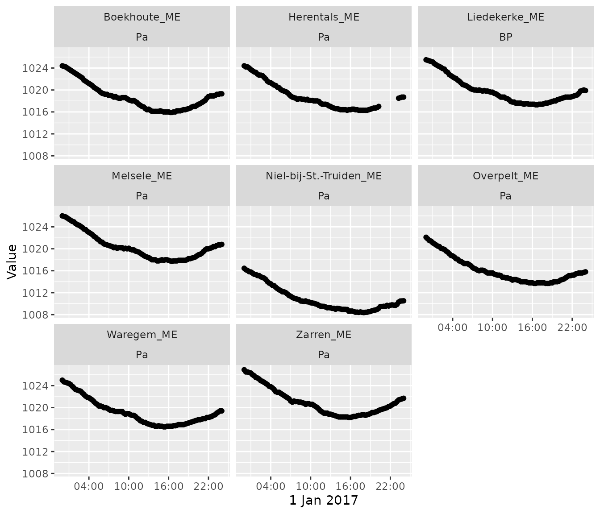
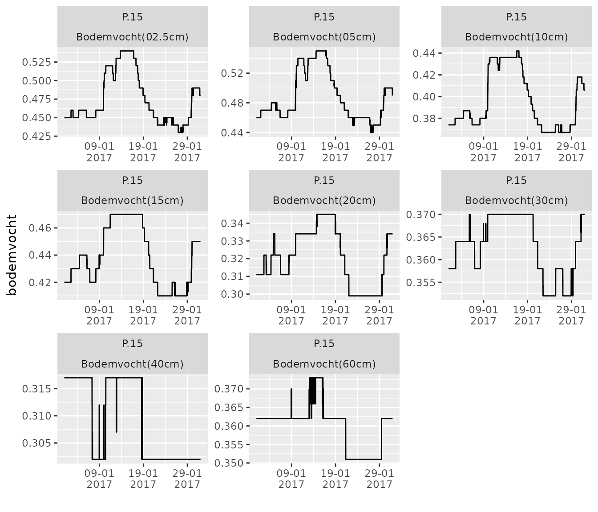

Download time series from multiple stations/variables
Stijn Van Hoey
2021-07-01
Source:vignettes/download_timeseries_batch.Rmd
download_timeseries_batch.RmdIntroduction
In many studies, the interest of the user is to download a batch of time series following on a selection criterion. Examples are:
- downloading air pressure data for the last day for all available measurement stations.
- downloading all measured variables at a frequency of 15 minutes for a given measurement station.
In this vignette, this type of batch downloads is explained, using the available functions of the wateRinfo package in combination with already existing tidyverse functionalities.
Download all stations for a given variable
Consider the scenario: “downloading air pressure data for the last day for all available measurement stations”. We can achieve this by downloading all the stations information providing air_pressure data (get_stations()) and for each of the ts_id values in the resulting data.frame, applying the get_timeseries_tsid() function:
# extract the available stations for a predefined variable
variable_of_interest <- "air_pressure"
stations <- get_stations(variable_of_interest)
# Download the data for a given period for each of the stations
air_pressure <- stations %>%
group_by(ts_id) %>%
do(get_timeseries_tsid(.$ts_id, period = "P1D", to = "2017-01-02")) %>%
ungroup() %>%
left_join(stations, by = "ts_id")## Warning in system("timedatectl", intern = TRUE): running command 'timedatectl'
## had status 1As this results in a tidy data set, we can use the power of ggplot to plot the data of the individual measurement stations:
# create a plot of the individual datasets
air_pressure %>%
ggplot(aes(x = Timestamp, y = Value)) +
geom_point() + xlab("1 Jan 2017") +
facet_wrap(c("station_name", "stationparameter_name")) +
scale_x_datetime(date_labels = "%H:%M",
date_breaks = "6 hours")
Download set of variables from a station
Consider the scenario: “downloading all soil_moisture (in dutch: ‘bodemvocht’) variables at a frequency of 15 minutes for the measurement station Liedekerke”. We can achieve this by downloading all the variables information of the Liedekerke station(get_variables()) using the station code of the waterinfo.be interface (ME07_006), filtering on the P.15 time series and for each of the ts_id values, applying the get_timeseries_tsid() function:
liedekerke_stat <- "ME07_006"
variables <- get_variables(liedekerke_stat)
variables_to_download <- variables %>%
filter(parametertype_name == "Bodemvocht") %>%
filter(ts_name == "P.15")
liedekerke <- variables_to_download %>%
group_by(ts_id) %>%
do(get_timeseries_tsid(.$ts_id, period = "P1M", from = "2017-01-01")) %>%
ungroup() %>%
left_join(variables, by = "ts_id")As this results in a tidy data set, we can use the power of ggplot to plot the data of the individual measurement stations:
liedekerke %>%
ggplot(aes(x = Timestamp, y = Value)) +
geom_line() + xlab("") + ylab("bodemvocht") +
facet_wrap(c("ts_name", "stationparameter_name"), scales = "free") +
scale_x_datetime(date_labels = "%d-%m\n%Y",
date_breaks = "10 days") 